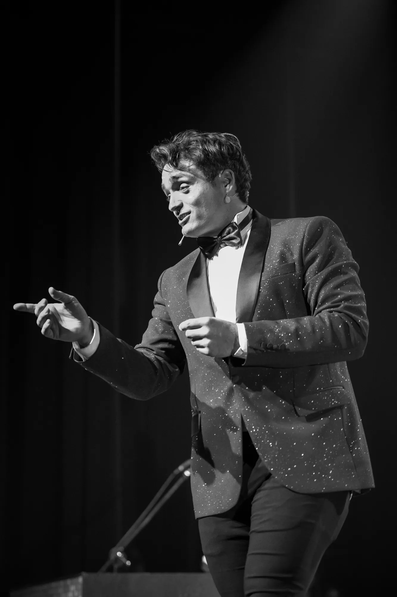
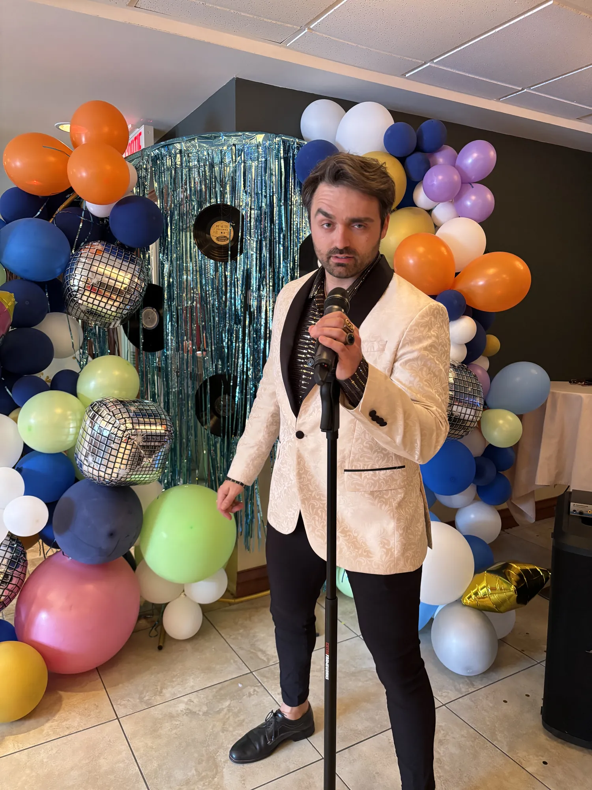
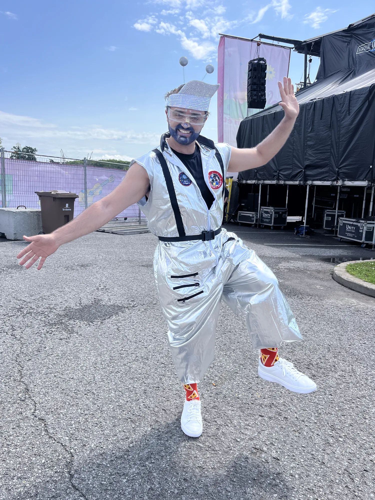
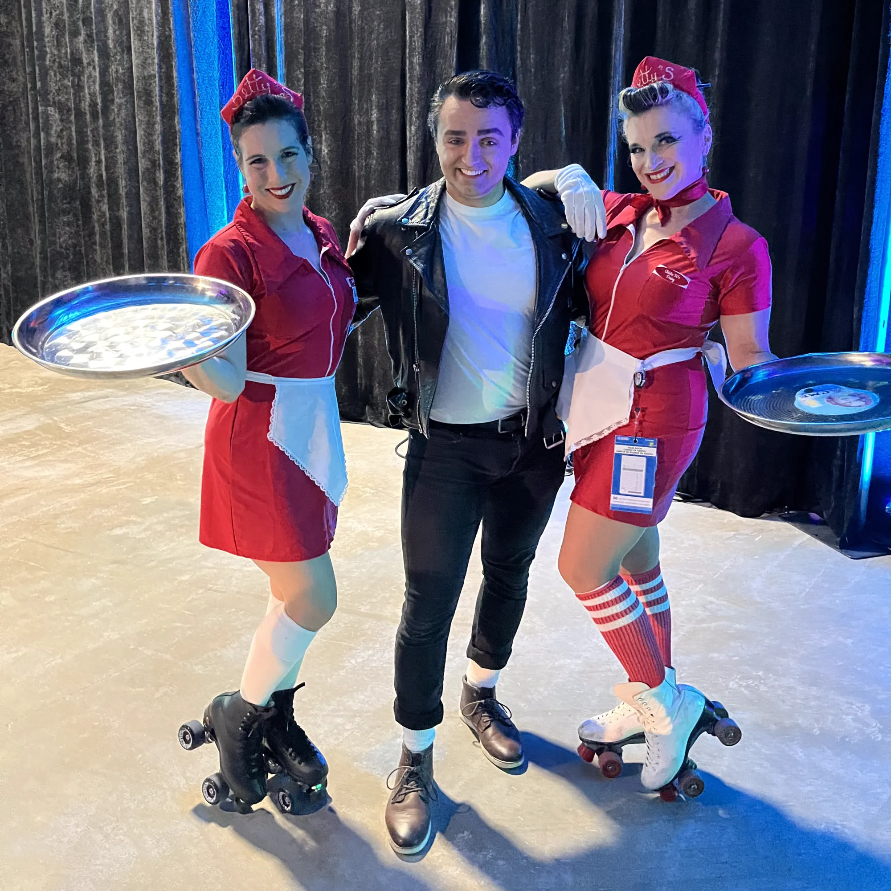
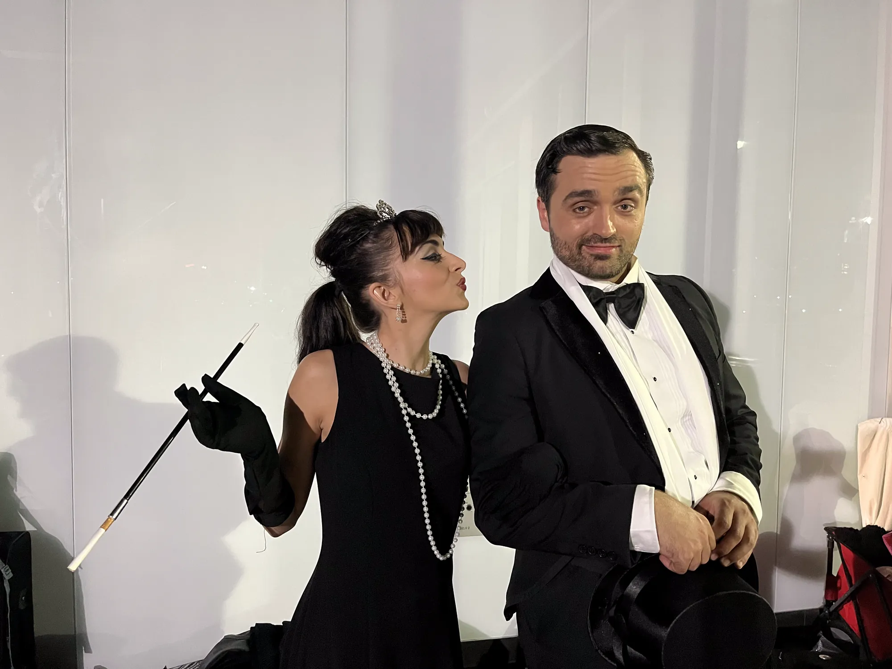

Services offerts
Des formules modulables pour tous vos besoins d'animation et de divertissement!

Chanteur Crooner
Ambiance feutrée pour votre 5 à 7? Dominic transforme votre soirée en club jazz chic avec son répertoire de standards intemporels.

Maître de Cérémonie
Un MC pro et charismatique pour vos galas, remises de prix et événements d'entreprise. Animation bilingue sur mesure.
.webp)
Animation Mariage
Une animation clé en main pour un mariage mémorable et pas quétaine. Le Grand Jeu des Mariés inclus!

Spectacles pour Aînés
Le Lapin Energizer de l'animation! Spectacles chaleureux avec répertoire adapté et approche humaine.

Personnage Loufoque
Animation de personnages créatifs pour événements familiaux. Astronaute, super-héros et plus encore!

Party Privé
En chanson ou en humour, je roast votre beau-frère pour ses 40 ans! Vos invités vont s'en rappeler.
Ils me font confiance
Dominic en Action

L'Artiste Caméléon

L'Imitateur

Le Chanteur
Dans les médias
Ce que la presse dit de Dominic, sur scène comme en tournée.

Dominic St-Laurent, le nouveau visage du capitaine Crochet
« Un chapeau de pirate sur la tête et un crochet à la main » : Dominic reprend le rôle à la salle Albert-Rousseau, du 6 août au 5 septembre.
Lire l'articlePasser par l'humour pour connaître ses droits en santé
La naissance de J'ai ben l'droit!, le spectacle qui a mené Dominic de Granby au Yukon.
La Tribune · 14 août 2018Dominic St-Laurent : dans la cour des grands
Du village de Saint-Herménégilde au Théâtre St-Denis : le portrait d'un parcours.
Arts et Culture · août 2026Le comédien Dominic St-Laurent reprend le rôle de Capitaine Crochet
25 représentations en 31 jours à la salle Albert-Rousseau.
Pourquoi Dominic?
Vous cherchez un animateur ordinaire? Passez votre chemin! Mais si vous voulez transformer votre événement en une expérience inoubliable (pour les bonnes raisons), vous êtes au bon endroit. Son secret? La préparation qui tue : Dominic fait ses devoirs. Chaque détail de votre événement devient une opportunité de personnalisation. Résultat? Vos invités vont dire 'Comment il savait ÇA?!
Un talent d'imitation à faire pâlir vos miroirs
Dominic imite tellement bien les célébrités québécoises que même elles se demandent si elles ne sont pas en train de se regarder dans un miroir. Attention, risque de dédoublement de personnalité dans la salle!
Des blagues sur mesure
Dominic crée des blagues personnalisées qui colleront à votre événement comme la robe de mariée après le buffet. Promis, on ne parlera pas de votre oncle Marcel qui danse comme un pingouin... sauf si c'est vraiment trop drôle.
Garantie "Pas de remboursement, mais des souvenirs pour la vie"
On ne vous remboursera pas si vous n'êtes pas satisfait, parce que cette situation n'existe tout simplement pas dans notre univers. Par contre, on vous garantit des crampes aux zygomatiques et des souvenirs à raconter jusqu'à votre 150e anniversaire.
Le Ventriloque
Un numéro qui a fait fureur! Dominic repousse encore les limites de sa polyvalence.
L'Artiste
Interprète multitask — chanteur, acteur, danseur — Dominic St-Laurent s'impose sur scène dans des comédies musicales québécoises (Grease, Blue Suede Show, Radio-Cassette, Tootsie, Peter Pan) où sa contribution dépasse l'interprétation : il a co-signé les textes des spectacles musicaux des Productions Grand V.
Du côté télé : après des rôles remarqués dans Sans rancune et Marc-en-Peluche, sa performance dans Audrey est revenue lui vaut une nomination aux Gémeaux. On l'aperçoit aussi dans Temps de chien et Indéfendable. À la télé, il incarne le charismatique Abra Kavanagh dans Qui a poussé Mélodie?
Maître de cérémonie prisé des événements corporatifs, il a conquis le public avec son spectacle humoristique J'ai ben l'droit!, qu'il a présenté partout jusqu'au Yukon. (Faisait frette, vous dira-t-il.)
En ce moment : Dominic incarne le Capitaine Crochet dans Peter Pan, la comédie musicale à la Salle Albert-Rousseau de Québec, du 6 août au 5 septembre 2026 — 25 représentations en 31 jours. Remplaçant officiel de Benoît Brière à l'Espace St-Denis l'hiver dernier, il reprend aujourd'hui le rôle laissé par P-A Méthot. Billets et horaire →
Sur scène, on le compare au lapin Energizer à qui on aurait donné un micro. 🎤

Grease
Audrey est revenue Peter Pan
Peter Pan